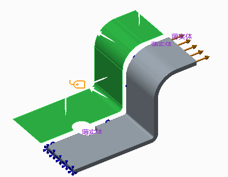
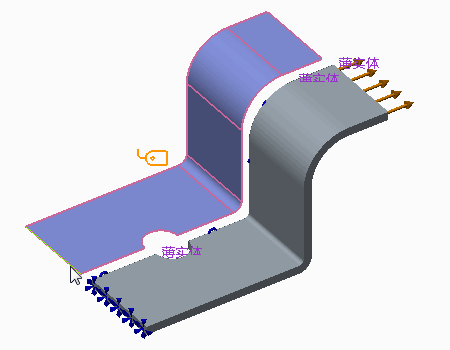
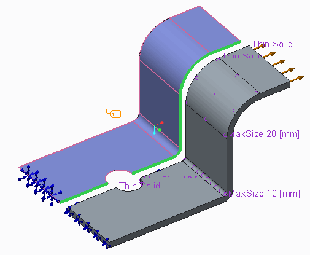
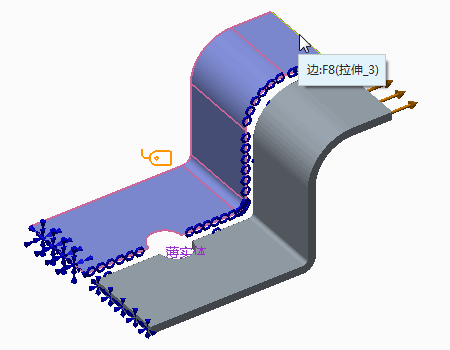
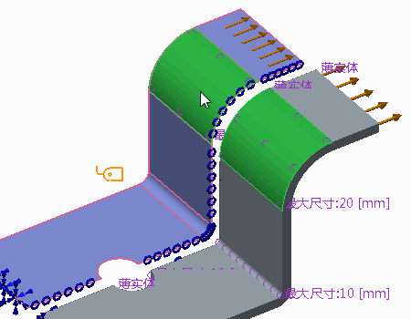
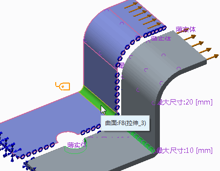
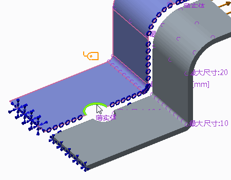
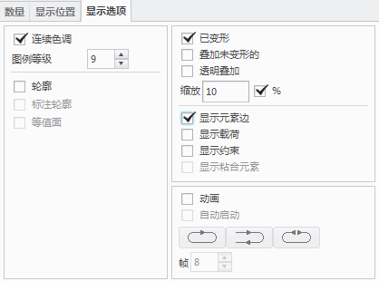
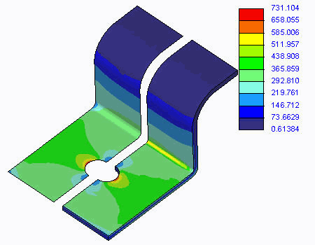

练习: 对中间曲面模型使用壳对
目标
成功完成此练习后，您将能够：
- 了解壳原理。
- 使用实体元素。
- 使用壳理想化。
假定背景
处理孔上的应力集中以及大折弯半径和小折弯半径区域上的应力时，将探索壳理论。
“关闭窗口”(Close Window) “拭除未显示的”(Erase Not Displayed)
“拭除未显示的”(Erase Not Displayed) 
 Simulate_Modeling\ShellPairsB
Simulate_Modeling\ShellPairsB
 NOTCHES_IN_SHELLS_SIMULATE.PRT
NOTCHES_IN_SHELLS_SIMULATE.PRT
|
|
||
 |
Creo Parametric 用户打开 NOTCHES_IN_SHELLS.PRT | |
|
|
||
-
任务 1. 定义壳理想化。
1. 在功能区中，选择“精细模型”(Refine Model) 选项卡。
2. 在“理想化”(Idealizations) 组中单击“壳”(Shell) 。“壳定义”(Shell Definition) 对话框随即出现。
3. 按住 CTRL 键并在模型中选择五个曲面，如图所示。

4. 在“属性”(Properties) 部分的“厚度”(Thickness) 字段中键入 5。
5. 单击“确定”(OK)。
-
任务 2. 定义约束。
1. 在功能区中，选择“主页”(Home) 选项卡。
2. 在“约束”(Constraints) 组中单击“位移”(Displacement)
 。将出现“约束”(Constraint) 对话框。
。将出现“约束”(Constraint) 对话框。
3. 从“参考”(References) 下拉菜单中选择“边/曲线”(Edges/Curves)。
4. 在模型中，选择如图所示的边。
5. 校验所有平移和旋转已固定，然后单击“确定”(OK)。
6. 在功能区中，选择“主页”(Home) 选项卡。
7. 单击“约束”(Constraints) 组下拉菜单，然后选择“对称”(Symmetry)
 。将出现“对称约束”(Symmetry Constraint) 对话框。
。将出现“对称约束”(Symmetry Constraint) 对话框。
8. 按住 CTRL 键并在模型中选择六条边，如图所示。
9. 单击“确定”(OK)。

-
任务 3. 定义载荷。
1. 在功能区中，选择“主页”(Home) 选项卡。
2. 在“载荷”(Loads) 组中单击“力/力矩载荷”(Force/Moment Load)
 。将出现“力/力矩载荷”(Force/Moment Load) 对话框。
。将出现“力/力矩载荷”(Force/Moment Load) 对话框。
3. 从“参考”(References) 下拉菜单中选择“边/曲线”(Edges/Curves)。
4. 在模型中，选择如图所示的边。
5. 在“力”(Force) 部分的 X 字段中键入 1000。
6. 单击“确定”(OK)。

-
任务 4. 定义 AutoGEM 控制。
1. 在模型树中，展开“AutoGEM 控制”(AutoGEM Controls)。
2. 右键单击 AutoGEMControl8，然后选择“编辑定义”(Edit Definition)。将出现“最大元素尺寸控制”(Maximum Element Size Control) 对话框。
3. 按住 CTRL 键并选择模型中显示的曲面。
4. 在“最大元素尺寸控制”(Maximum Element Size Control) 对话框中，单击“确定”(OK)。
5. 在模型树中，右键单击 AutoGEMControl6，然后选择“编辑定义”(Edit Definition)。将出现“最大元素尺寸控制”(Maximum Element Size Control) 对话框。
6. 按住 CTRL 键并选择模型中显示的曲面。
7. 在“最大元素尺寸控制”(Maximum Element Size Control) 对话框中，单击“确定”(OK)。
8. 在功能区中，选择“精细模型”(Refine Model) 选项卡。
9. 从 AutoGEM 组中单击“控制”(Control) 下拉菜单，然后选择“最大元素尺寸”(Maximum Element Size)
 。将出现“最大元素尺寸控制”(Maximum Element Size Control) 对话框。
。将出现“最大元素尺寸控制”(Maximum Element Size Control) 对话框。
10. 从“参考”(References) 下拉菜单中选择“边/曲线”(Edges/Curves)。
11. 按下 CTRL 键并在模型中选择弯曲边，如图所示。
12. 在“最大元素尺寸控制”(Maximum Element Size Control) 对话框中的“元素尺寸”(Element Size) 字段中键入 10。
13. 单击“确定”(OK)。
14. 在功能区中，选择“精细模型”(Refine Model) 选项卡。
15. 从 AutoGEM 组中单击AutoGEM
 。将出现 AutoGEM 对话框。
。将出现 AutoGEM 对话框。
16. 单击“创建”(Create)。随即创建“实体”元素和“壳”元素。请注意网格控制对网格质量所做的改进。
17. 在所有对话框中单击“关闭”(Close)，当出现保存网格的提示时，单击“否”(No)。
-
任务 5. 定义并运行静态分析。
1. 在功能区中，选择“主页”(Home) 选项卡。
2. 在“运行”(Run) 组中单击“分析和研究”(Analyses and Studies)
 。将出现“分析和设计研究”(Analyses and Design Studies) 对话框。
。将出现“分析和设计研究”(Analyses and Design Studies) 对话框。
3. 单击“文件”(File) > “新建静态分析”(New Static)。将出现“静态分析定义”(Static Analysis Definition) 对话框。
4. 完成以下步骤：
- 在“名称”(Name) 字段中键入 shell_vs_volume_notches。
- 选择在“约束集/元件”(Constraint Set/Component) 和“载荷集/元件”(Load Set/Component) 部分中显示的约束集和载荷集。
- 选择“收敛”(Convergence)·选项卡，然后从“方法”(Method) 下拉菜单中单击“单通道自适应”(Single-Pass Adaptive)。
- 单击“高级控制”(Advanced Control)。“高级 SPA 收敛控制”(Advanced SPA Convergence Control) 对话框随即出现。完成以下步骤：
- 选择“使用高级控制”(Use Advanced Controls)。
- 在“最大应力误差目标”(Maximum Stress Error Target) 字段中键入 5。
- 在“局部应力误差目标”(Local Stress Error Target) 字段中键入 10。
- 不要为“局部应力误差”(Local Stress Error) 字段选择任何参考。
- 在“高级 SPA 收敛控制”(Advanced SPA Convergence Control) 对话框中，单击“确定”(OK) 以返回至“静态分析定义”(Static Analysis Definition) 对话框。
- 选择“输出”(Output) 选项卡。
- 在“绘制栅格”(Plotting Grid) 字段中键入 6。
5. 单击“确定”(OK) 返回到“分析和设计研究”(Analyses and Design Studies) 对话框。
6. 单击“配置运行设置”(Configure Run Settings)
 。将出现“运行设置”(Run Settings) 对话框。
。将出现“运行设置”(Run Settings) 对话框。
7. 默认情况下，结果和临时输出目录被设置在工作目录中。两种分析都储存在此位置。单击“确定”(OK)。
8. 在“分析和设计研究”(Analyses and Design Studies) 对话框中选择 shell_vs_volume_notches，然后单击“开始运行”(Start Run)
 。单击“是”(Yes) 以运行交互诊断。
。单击“是”(Yes) 以运行交互诊断。
9. 分析完成后，单击“显示研究状况”(Display Study Status)
 查看汇总报告。
查看汇总报告。
10. 关闭所有对话框并返回至“分析和设计研究”(Analyses and Design Studies) 对话框。
-
任务 6. 创建结果窗口并检查结果。
1. 在“分析和设计研究”(Analyses and Design Studies) 窗口中选择 shell_vs_volume_notches。
2. 单击“审阅结果”(Review Results) 。将出现“结果窗口定义”(Result Window Definition) 对话框。
3. 完成以下步骤：
- 校验已将“条纹”(Fringe) 选定为“显示”(Display) 类型。
- 选择“数量”(Quantity) 选项卡。
- 校验“应力”(Stress) 已选定。
- 从下拉菜单中选择 MPa。
- 从“分量”(Component) 下拉菜单中选择 von Mises。
- 选择“显示选项”(Display Options) 选项卡。如图所示完成字段。
4. 单击“确定并显示”(OK and Show)。
5. 检查 von Mises 应力条纹图。请注意，使用壳理想化的孔和大折弯半径上的应力集中是精确的。通过比较，使用实体元素的小半径区域中的应力是不精确的。
6. 单击“文件”(File) > “退出结果”(Exit Results) 返回至 Creo Simulate。在“消息”(Message) 对话框中单击“否”(No)。
7. 在“分析和设计研究”(Analyses and Design Studies) 对话框中，单击“关闭”(Close)。
8. 单击“文件”(File) > “管理会话”(Manage Session) > “拭除当前”(Erase Current) 以关闭显示的窗口，并从内存中拭除模型。当提示您确认时，请单击“是”(Yes)。
练习就此结束。